Префектура Окинава · Нандзё · гостиница
mui в Нандзё: гостиница-сосуд для ветра, моря и неспешных дней на юге Окинавы
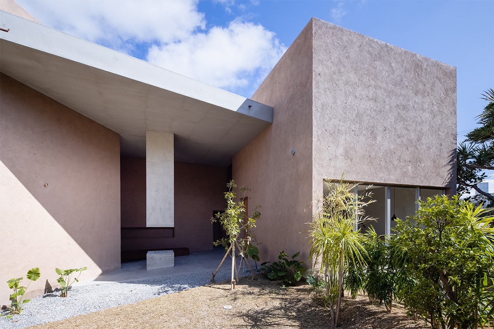
На окраине деревни Хякуна в городе Нандзё, на юге острова Окинава, в 2021 году открылась маленькая гостиница mui. Здесь нет сервиса дорогого отеля, и в этом весь замысел: дом служит сосудом, а наполняют его природа юга Окинавы и сами гости.
Идея
Гостиница как сосуд
Гостиница mui открылась 3 марта 2021 года в Хякуне, старой деревне города Нандзё. Юг острова Окинава богат и природой, и культурой, и хозяева задумали место, которое соединяет «жизнь и путешествие», «природу и творчество». Полное название звучит как «mui, сосуд для путешествий и ветра».
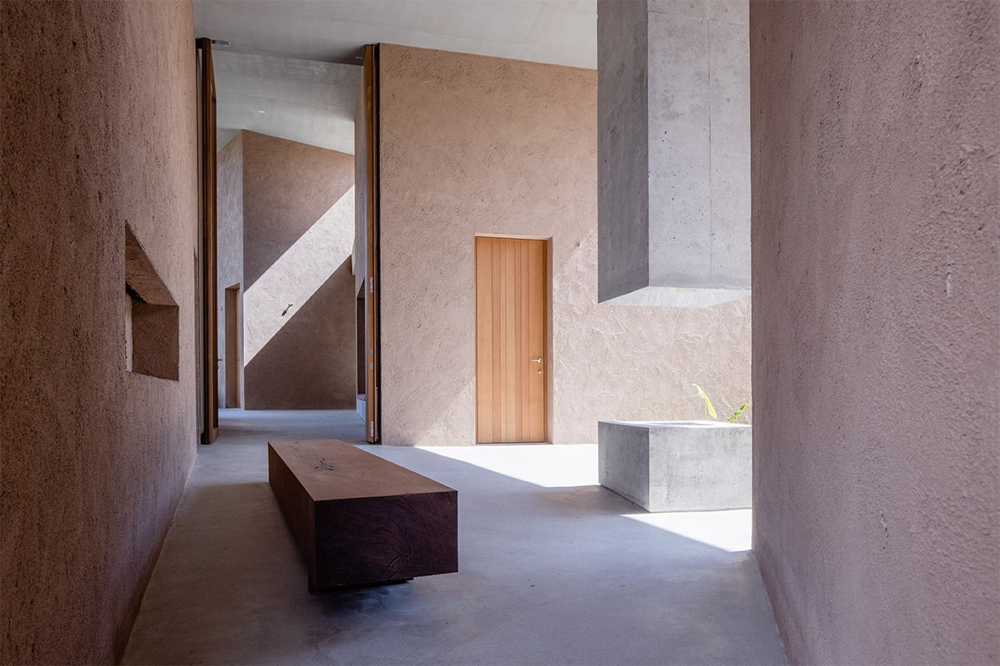
Слово mui взято из даосского выражения о «недеянии» и естественном ходе вещей: всё происходит само, без умысла. Вода, встретив твёрдое, меняет форму и обтекает его; младенец плачет, потому что не может иначе. Хозяева хотели, чтобы в их доме человек так же доверялся мыслям и желаниям, которые приходят сами.
Сервиса и удобств, как в дорогом отеле или рёкане, здесь нет. Гостиница остаётся сосудом, а материалом служит сам юг Окинавы: каждый находит в нём свой способ хорошо провести время. Логотип нарисовала местная иллюстраторша: она искала образ ветра и увидела его в плывущих облаках.
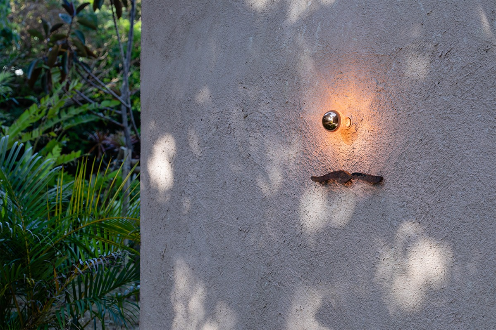
Архитектура
Без мерки «отеля»
Дом устроен так, чтобы внешнее и внутреннее, природа и рукотворное, гостиница и жильё, личное и общее мягко перетекали друг в друга. Удобство здесь не главная цель. Границы иногда нарочно размыты, чтобы в какой-то момент что-то тронуло сердце.
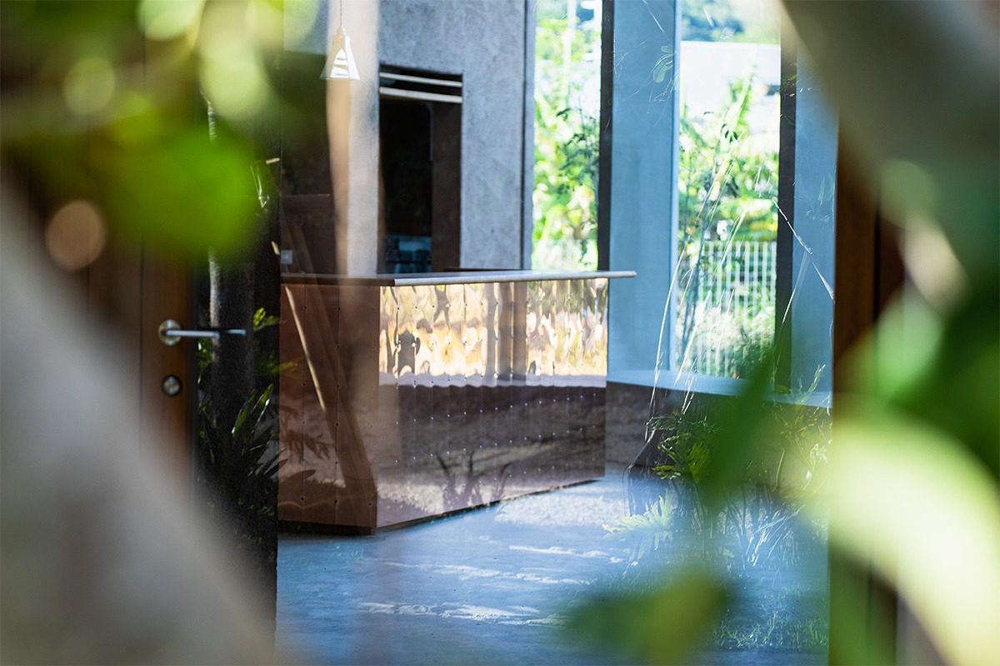
Хозяева рассуждали так: если гость хоть на миг замрёт перед какой-то сценой, это место останется у него в памяти. Поэтому они старались отложить в сторону привычную мерку «отеля» и строили дом вместе с архитекторами бюро studio cochi architects, получая от этого удовольствие. Основатель бюро в 2019 году получил бронзовую медаль премии Architecture Asia Awards для молодых архитекторов.
Номера
Четыре дома с окном в небо
Номеров в mui всего четыре. Планировка, площадь и оснащение у них почти одинаковые, различаются вид на сад и спальные места: где-то кровати, где-то футоны.
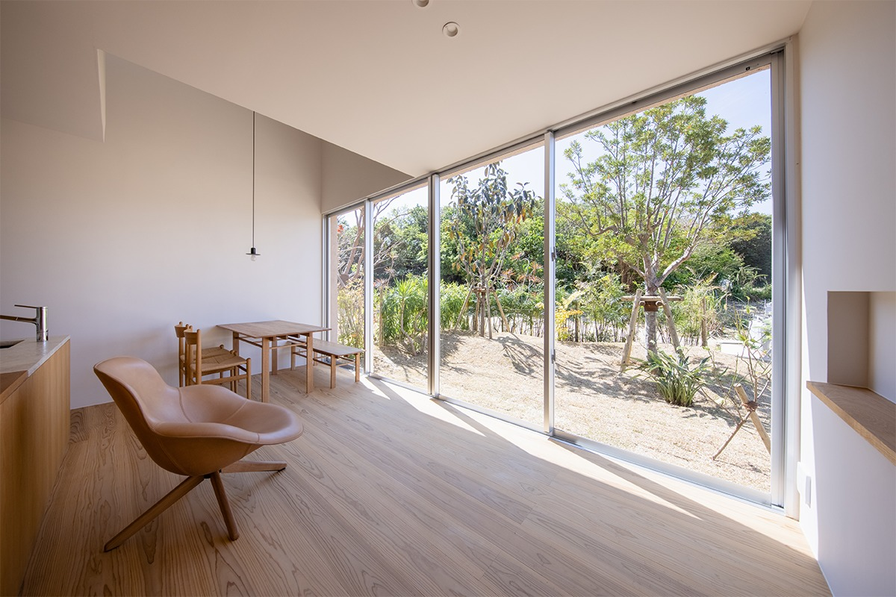
Первый этаж занимает кухня-столовая с двухконфорочной индукционной плитой, посудой для готовки и холодильником. Телевизора нет, зато музыка звучит особенно хорошо: над гостиной пространство открыто до второго этажа. Колонку Bluetooth можно зарядить и поставить где угодно, у кровати или на столе.
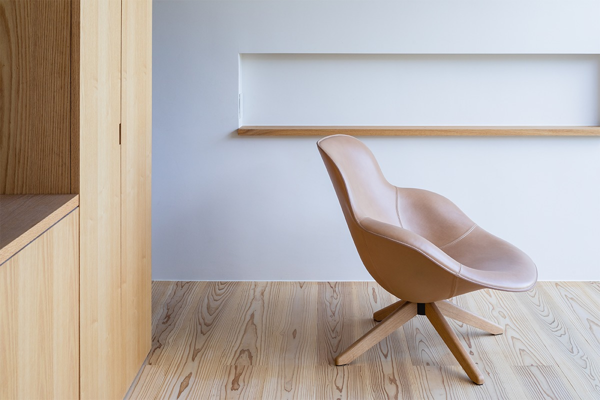
В номерах стоит кресло «Эльза». Его придумал дизайнер, родившийся на Окинаве в 1977 году и с 2015 года работающий в Милане под собственной маркой. Мягкая кожа натянута без единой складки, в кресле трудно не задержаться. Оно спокойно вписывается в комнату и всё же сразу притягивает взгляд.
Ванная mui удивляет почти всех. Она на втором этаже, и над ней большое окно в крыше. Его можно открыть: ночью отсюда видны звёзды, днём синее небо и облака. Стеной ванную от комнаты не отгородили, чтобы свет из окна наверху расходился по всему этажу. Крючки для шторки сделали из меди и чуть длиннее обычного, так что даже за закрытой шторкой остаётся немного воздуха.
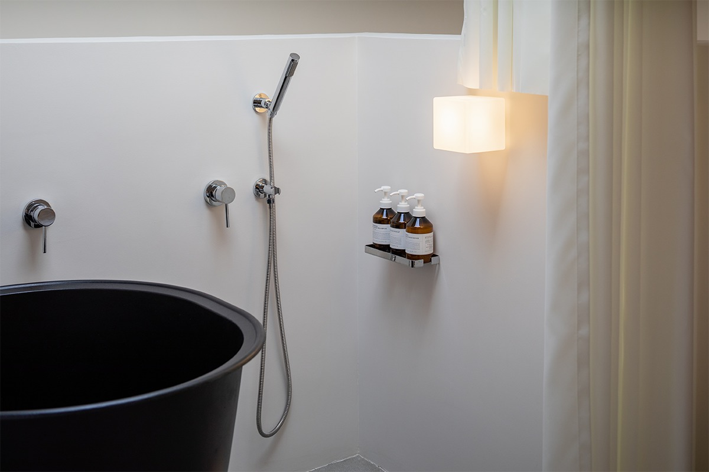
Матрасы с пружинными блоками сделаны в Японии. Пуховые одеяла подобраны под окинавский климат, бельё из стопроцентного хлопка, двойной марли, соткано в Киото. Кроме окна в крыше на втором этаже окон нет, и тихо здесь, как на чердаке. У кровати горят медные бра, свет от них тёплый и спокойный.
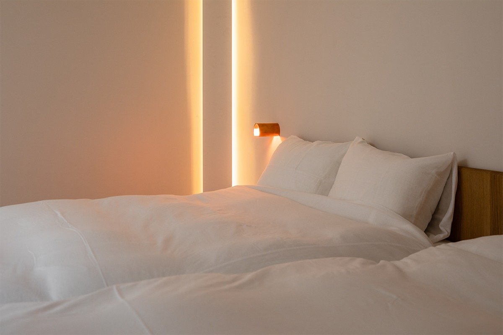
Ради природы одноразовых принадлежностей здесь не дают: зубных щёток, расчёсок, шапочек для душа, бритв. Пижам тоже нет, а постельное бельё во время проживания не меняют. Тем, кто едет надолго, советуют обсудить это при заселении. В номере есть Wi-Fi, кондиционер, фен, чайник, посуда и туалет с биде, в ванной полотенца, шампунь с бальзамом, гель для душа и мыло.
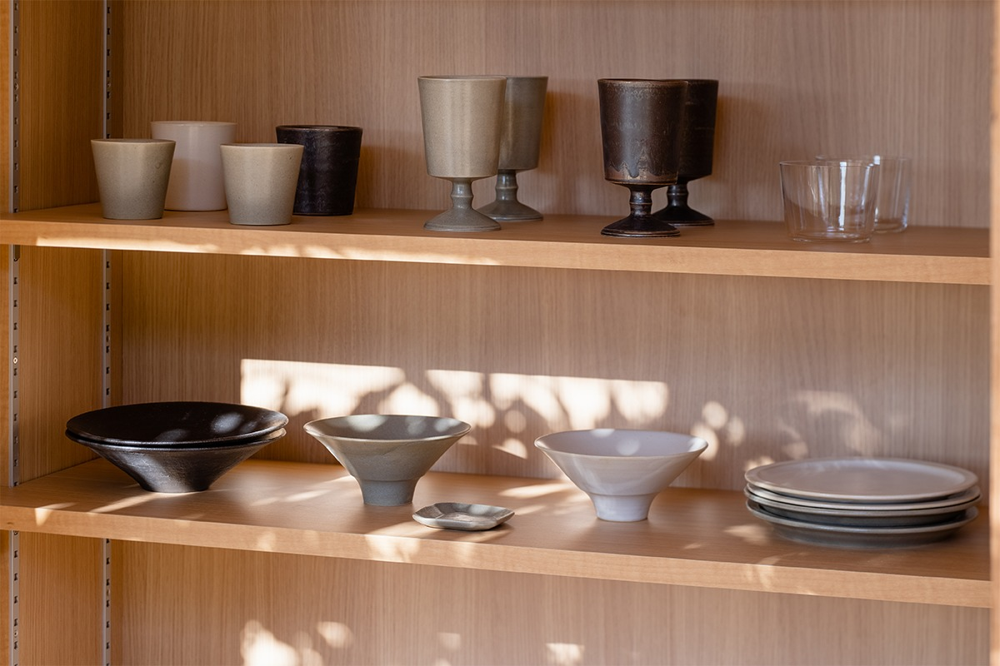
На полках в каждом номере стоит посуда мастерской nakamurakenoshigoto, и почти вся посуда гостиницы тоже её работы. Пара мастеров переехала на Окинаву в 2018 году и работает с керамикой и кожей: делает посуду, абажуры, цветочные горшки, украшения. Их вопрос простой: как жить уютно? Обычная домашняя еда в таких тарелках выглядит так, будто ей там хорошо.
Еда
Завтрак, кофе и пиво
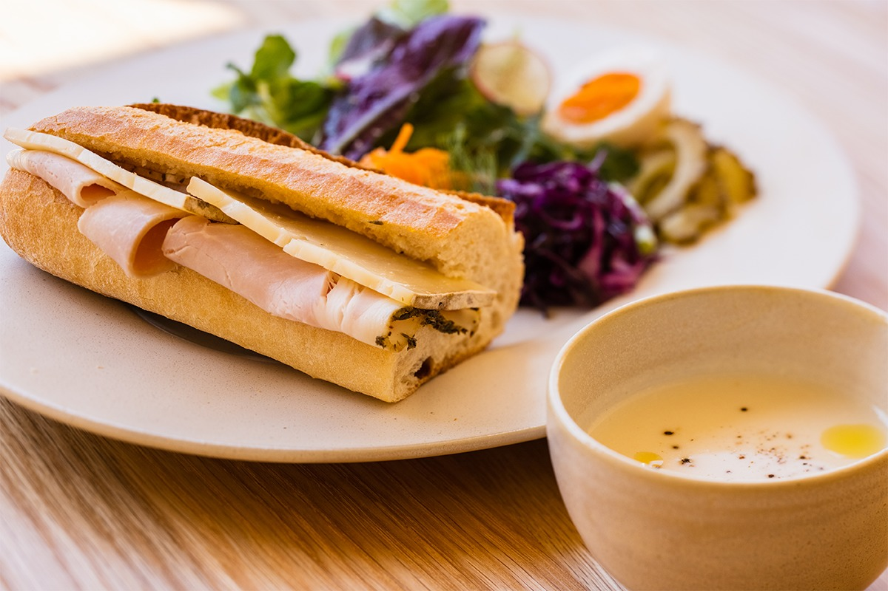
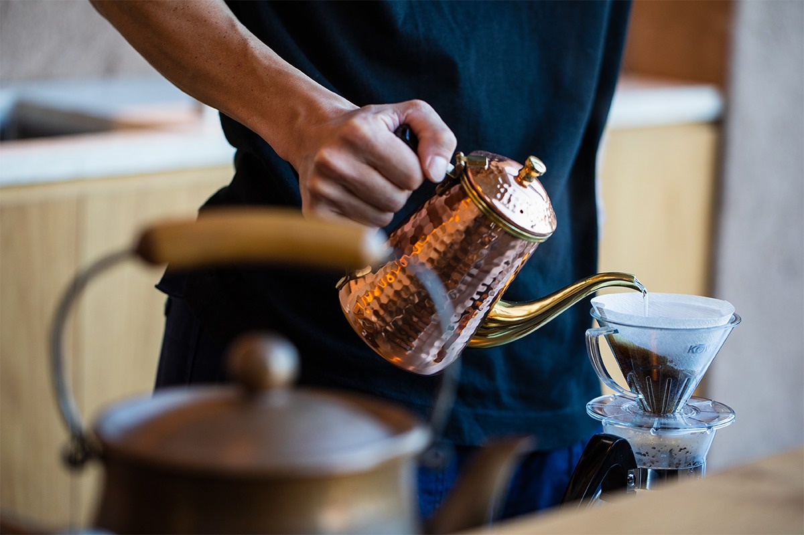
На завтрак и лёгкий перекус в mui подают колбасы и ветчину мастерской tesio из города Окинава, вкус которых трудно забыть. К ним, утром или после еды, спешелти-кофе YAMADA COFFEE. Завтрак накрывают с 8:00 до 10:00, кафе работает с 13:00 до 17:00 со вторника по пятницу.
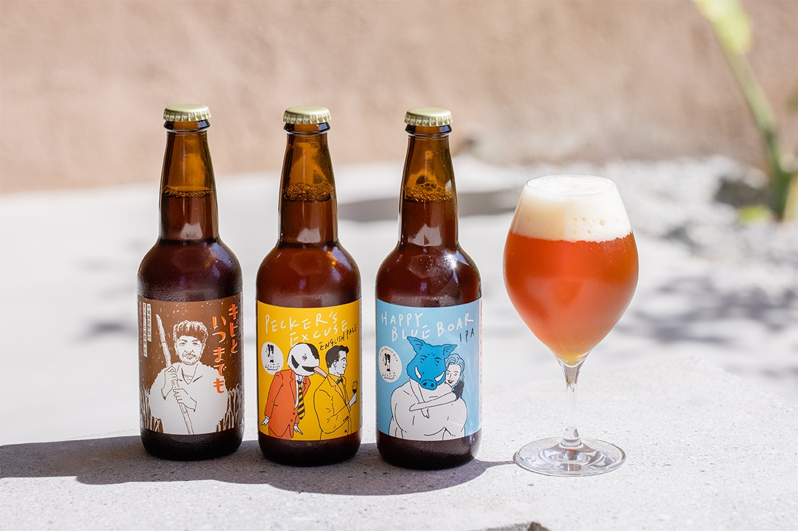
Вечером здесь пьют окинавское крафтовое пиво Cliff Beer и Ukishima Brewing, сваренное из местного ячменя и других продуктов острова. Бар открыт с 20:00 до 23:00, последний заказ в 22:30. В 2021 году кафе и бар принимали только постояльцев.
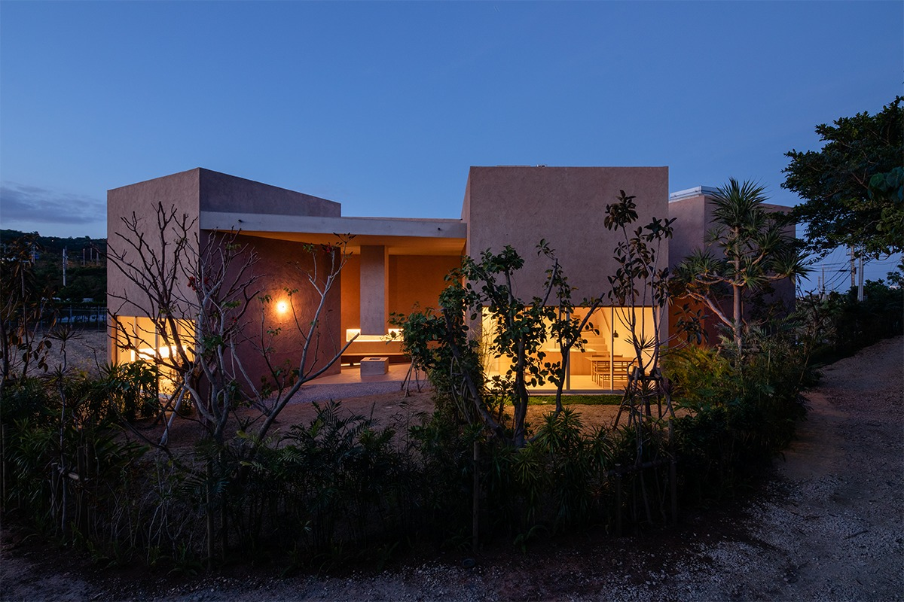
Номер в mui в 2021 году стоил от 28 000 иен за ночь.
mui
- Адрес
- префектура Окинава, Нандзё, Тамагусуку, Хякуна, 1201-3
- Телефон
- +81 98-943-6301
- Номера
- 4
- Заезд / выезд
- 15:00–23:00 / до 11:00
- Цены / Вход
- от 28 000 иен за номер за ночь
- Сайт
- mui.okinawa
Фото: Дзингу Ооки.